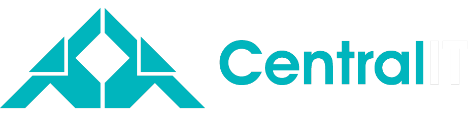

IniciarElevamos a performance da sua organização conectando pessoas, processos e tecnologia às estratégias do seu negócio.
Seis frentes, a plataforma CITSmart por baixo de todas.
Governo do Distrito Federal
serviços de zeladoria abertos pelo cidadão a qualquer hora, no Portal Cidadão.
administrações regionais no mesmo fluxo
identidade federal, sem cadastro novo
o cidadão marca o ponto e o endereço se preenche
A plataforma
Não é conceito. É o sistema rodando em cliente, com gente usando todo dia.
Traga o problema que mais custa hoje. Saímos daqui com um caminho, não com uma proposta genérica.
centralit.com.br